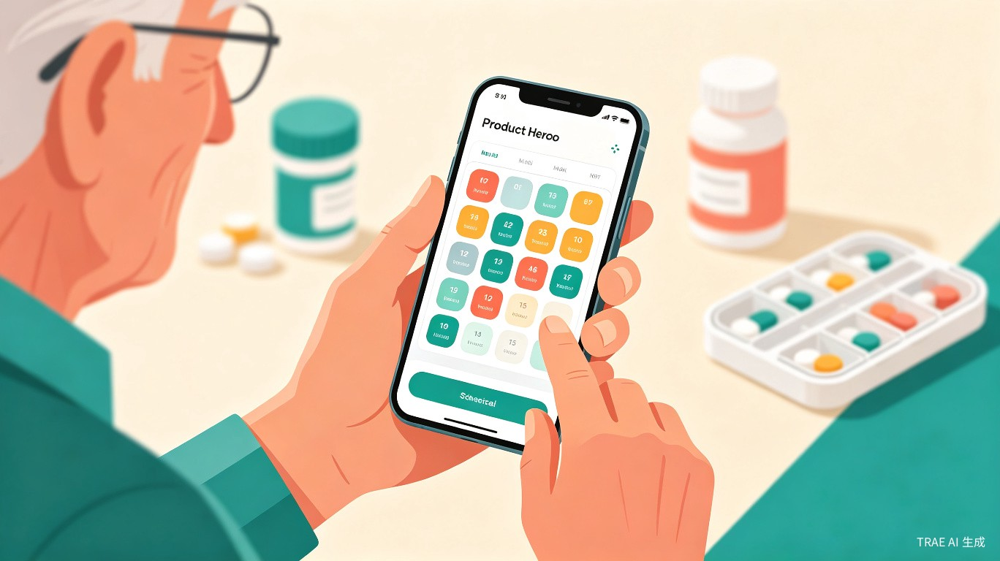
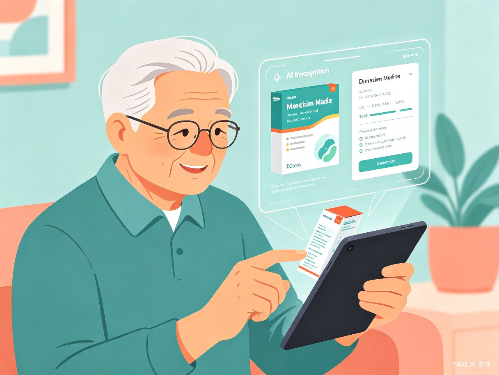
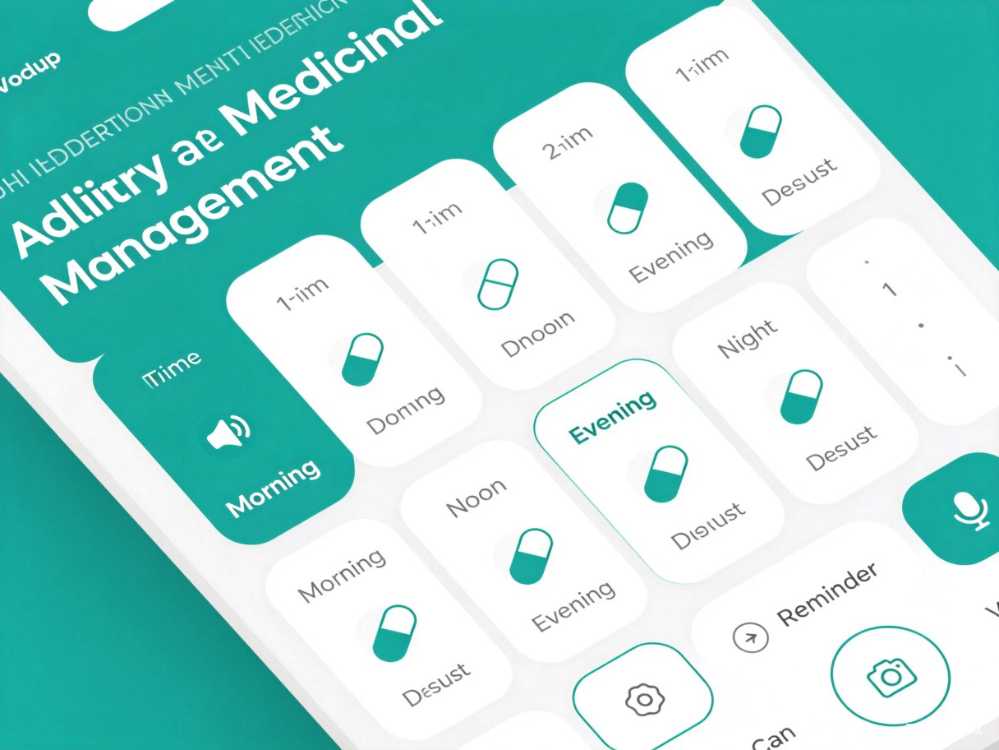

我们发现了什么问题？
很多老年人同时服用多种药物——降压药、降糖药、心脏病药、安眠药……每天要记清楚什么时间、吃几粒、饭前还是饭后，对记忆力衰退的老人来说，这几乎是不可能完成的任务。
记不住用药方案
一天多次服药，不同药物时间不同、剂量不同，老人经常搞混或遗忘
看不清药品说明
视力下降后，药品说明书上的小字根本看不清，无法自行确认用法
子女无法远程监督
子女在外工作，无法每天打电话确认父母是否正确服药，焦虑又无力
换药后旧方法失效
每次去医院调整用药方案后，便利贴、口头叮嘱等旧提醒方式全部作废
AI 药盒管家是什么？
AI 药盒管家是一款基于 Web 的智能用药管理应用，专为老年人和他们的子女设计。核心能力是：拍照识别药品，自动生成用药计划，语音提醒按时服药。


核心功能
-
拍照识别药品 对准药品包装拍一张照，AI自动识别药品名称、规格、用法用量
-
智能用药时间表 自动生成早、午、晚、睡前四个时段的可视化用药计划，一目了然
-
语音播报提醒 到服药时间自动语音播报："王奶奶，该吃降压药了，1粒，温水送服"
-
服药记录追踪 一键确认已服药，自动记录历史，子女可远程查看父母服药情况
-
子女远程管理 子女通过微信分享链接，远程帮父母添加/修改药品，查看服药报告
-
药物相互作用提醒 录入多种药物后，自动检测是否存在已知的不良相互作用并预警
使用流程
flowchart LR
A[拍照上传药品] --> B[AI识别药品信息]
B --> C[自动生成用药时间表]
C --> D[语音提醒按时服药]
D --> E[一键确认已服药]
E --> F[生成服药报告]
F --> G[子女远程查看]
典型使用场景
子女回家后，把父母所有的药一瓶瓶拍照上传，AI自动识别并生成完整用药计划。设置好后，父母每天只需要听语音提醒、按按钮确认即可。子女平时打开链接就能看到爸妈今天有没有按时吃药。
老人从医院回来，新开了两种药。打开应用，对着药盒拍两张照，系统自动识别新药并更新用药时间表。不需要子女帮忙，老人自己就能完成操作。
老人记不清中午的药吃了没有，打开应用查看服药记录，确认中午的降压药已经按时服用，安心了。
面向谁？
核心用户：60岁以上多药共用老人
每天需要服用3种以上药物的老年人，记忆力减退、视力下降，需要简单直观的用药辅助工具
关键用户：关心父母用药的成年子女
在外工作、无法每天陪伴父母的子女，需要远程了解和监督父母用药情况，减少焦虑
价值与意义
社会价值
直接降低老年人用药错误率，减少因用药不当导致的急诊和住院。守护千万家庭的生命安全，减轻医疗系统负担，让科技真正服务于最需要帮助的人群。
效率提升
将子女每天打电话提醒、手写便利贴的低效流程，简化为一次拍照、自动计划、智能提醒的流畅体验。释放子女精力，提升老人自主管理健康的能力和尊严。
技术方案
本项目使用 TRAE Work 完成，充分发挥 AI 辅助开发的优势，实现从创意到产品的快速落地。
开发计划
第一周：核心功能开发
药品拍照上传、AI识别接口对接、用药时间表生成、基础界面搭建
第二周：提醒与记录系统
语音播报提醒、服药确认按钮、历史记录存储、本地数据持久化
第三周：适老化优化与测试
大字体高对比度优化、操作流程简化、真实用户测试反馈、Bug修复
世界很大，放手去造
用 AI 的力量，让每一位父母都能安心吃药、健康生活。这不仅是一个产品，更是对家人的爱。
参赛作品 · TRAE AI 创造力大赛 · 学习工作赛道 + 社会公益